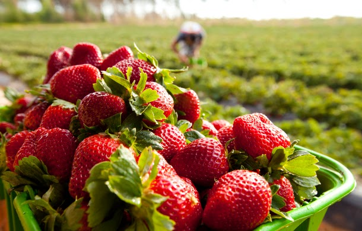
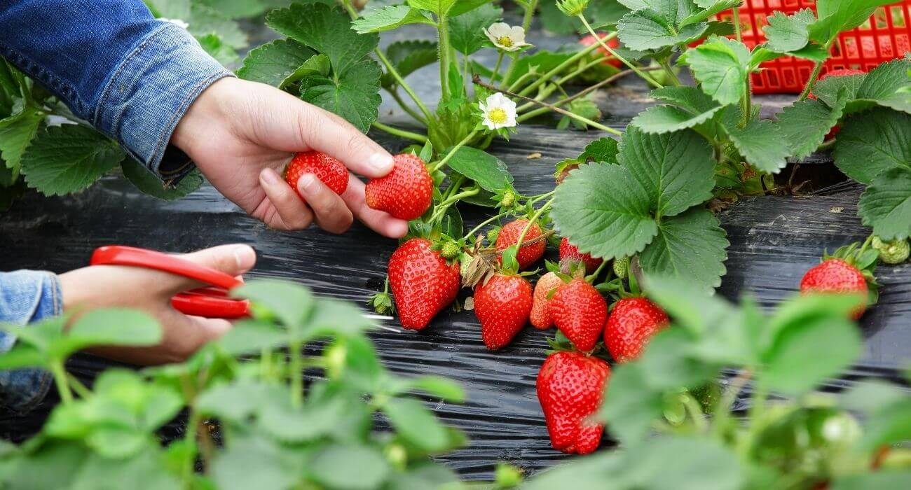

Os morangos são frutas vibrantes e deliciosamente suculentas, conhecidas por sua cor vermelha intensa e sabor doce com um toque ácido. Originários de regiões temperadas, esses frutos são amplamente cultivados em diversas partes do mundo, sendo apreciados tanto por seu apelo visual quanto pelo seu perfil nutricional.
No Paraná, os morangos são cultivados principalmente em regiões de clima mais frio e altitude elevada, como a região dos Campos Gerais e a Serra da Graciosa. O estado se destaca na produção de morangos devido às condições climáticas favoráveis, que proporcionam temperaturas mais amenas e adequadas para o cultivo dessa fruta.
